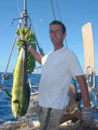
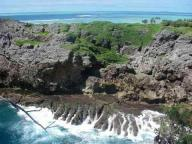

|


|
Dromen over het steakhouse
» exacte locatie
 window.open('./frame_map.php%3Fid=202.html'
De emails met deze websiteverhaaltjes die we naar de site sturen beginnen we altijd op de eerste regel met de positie. Daar zie je in het verhaal zelf niks van maar Chris (broer Joost) heeft onze site zo gemaakt dat de positie meteen verwerkt wordt met een mooi oranje pijltje in de google-atlas. Dat hebben jullie vast wel gezien. Ik moet er nog aan wennen dat we weer op het oostelijk halfrond zitten en niet per ongeluk de lengte in west uitdruk. Goed nieuws, Guba, de cycloon bij Australie, is opgelost.
Daar hoeven we niet meer naar om te kijken. Er zijn geruchten dat de volgende cycloon binnenkort geboren gaat worden op Samoa. We zijn dus mooi op tijd weg uit Tonga. Ons weer naar Nieuw Zeeland blijft goed. Het grootste deel van de tocht kwam de wind met vijf tot zes beaufort uit het zuidoosten en konden we een hoek maken van zestig graden ten op zichte van de wind. Dat leverde een behoorlijk bumpy zee op. Golven die lomp tegen de boot slaan en veel water dat over de buiskap spat. Oppassen dus als
je om je heen kijkt naar andere boten. Gelukkig is de wind nu wat gedraaid en kunnen we precies naar Opua koersen. De worst die nu voor onze neus hangt is het steakhouse aldaar (gehoord via het netje). Nog 189 mijl, twee dagen!
window.open('./frame_map.php%3Fid=202.html'
De emails met deze websiteverhaaltjes die we naar de site sturen beginnen we altijd op de eerste regel met de positie. Daar zie je in het verhaal zelf niks van maar Chris (broer Joost) heeft onze site zo gemaakt dat de positie meteen verwerkt wordt met een mooi oranje pijltje in de google-atlas. Dat hebben jullie vast wel gezien. Ik moet er nog aan wennen dat we weer op het oostelijk halfrond zitten en niet per ongeluk de lengte in west uitdruk. Goed nieuws, Guba, de cycloon bij Australie, is opgelost.
Daar hoeven we niet meer naar om te kijken. Er zijn geruchten dat de volgende cycloon binnenkort geboren gaat worden op Samoa. We zijn dus mooi op tijd weg uit Tonga. Ons weer naar Nieuw Zeeland blijft goed. Het grootste deel van de tocht kwam de wind met vijf tot zes beaufort uit het zuidoosten en konden we een hoek maken van zestig graden ten op zichte van de wind. Dat leverde een behoorlijk bumpy zee op. Golven die lomp tegen de boot slaan en veel water dat over de buiskap spat. Oppassen dus als
je om je heen kijkt naar andere boten. Gelukkig is de wind nu wat gedraaid en kunnen we precies naar Opua koersen. De worst die nu voor onze neus hangt is het steakhouse aldaar (gehoord via het netje). Nog 189 mijl, twee dagen!
|
|
|

Tropische cycloon
» exacte locatie
window.open('./frame_map.php%3Fid=201.html'
Tropische cycloon Gruba is geboren, net boven Australie. De laatste maand in Tonga hoorden we iedereen een beetje lachwekkend doen over die cyclonen. Ze hadden er maar een per twintig jaar, het was daar vrijwel safe, enzovoort. Je moest zeker niet te vroeg weg gaan richting Nieuw Zeeland, want dan had je kans op een winterstorm daar in het zuiden. Nu is het dus zover, er staat er eentje op de kaart. Gruba is nog ver weg, maar de banen van cyclonen zijn slecht voorspelbaar. Voor de boten die nog niet
vertrokken zijn is dat erg vervelend. Ze kunnen in ieder geval niet weg nu en als de cycloon een serieuze omvang krijgt en op hun af komt moeten ze op zoek naar een hele goede ankerplek. Voor ons speelt het ook een beetje. We hebben nog vijf dagen te gaan naar Nieuw Zeeland. Geen enkel van de computermodellen geeft aan dat de cycloon zo snel bij ons kan zijn, maar een heel klein brokje bezorgdheid nestelt zich toch in onze gedachte. We zijn wel blij dat we vertrokken zijn uit Tonga en dat we nu al
relatief dicht bij Nieuw Zeeland zijn. Ander nieuws: we varen weer op het oostelijk halfrond! Het halfrond van ons thuisland. De graden tikken af en lijkt een beetje alsof we op de terugweg zijn.
|
|
|
Direct naar Nieuw Zeeland
» exacte locatie
Het is een dynamische tocht. We hebben steeds window.open('./frame_map.php%3Fid=200.html'op het laatst besloten om toch door te varen. Eigenlijk wilden we erg graag in Minerva Reef stoppen, maar daar aangekomen hoorden we dat de omstandigheden heel goed waren om naar Nieuw Zeeland te gaan. Deze kans wilden we niet laten liggen. Vooral ook niet omdat we anders misschien meer dan een week in Minerva Reef moesten wachten op een nieuwe kans. Nu varen we dus min of meer gelijk op met een horde van tien andere
boten die in Minerva Reef hebben liggen wachten op dit weather window. Het zeilen is nog niet helemaal perfect, want de wind komt ons nog iets teveel van voren, maar dat gaat morgen veranderen. En als het goed is kunnen we dan snel in Nieuw Zeeland zijn. We verwachten over zeven dagen, maar je weet natuurlijk nooit zeker wat het weer gaat doen. De hele groep houdt twee keer per dag contact via de radio. Dat is wel gezellig en het scheelt ook om te horen dat iedereen dezelfde problemen heeft. Afgelopen
nacht bijvoorbeeld was voor ons niet erg comfortabel vanwege steile golven en je vraagt je dan toch af of je iets verkeerd doet. Dan is het wel aardig om te horen dat alle boten van klein tot groot hetzelfde probleem hadden gehad. Verdere details: Ilse is nu een bananencake aan het bakken, want we hebben nog zo�n 100 bananen aan de tros. Ik ben verslingerd geraakt aan een fantastische boek over India: Shantaram. Verder heb ik vannacht een muts op gehad, want het wordt langzaam kouder. In de haven
in Opua, Nieuw Zeeland waar we aan gaan komen hebben ze warme douches (gerucht via het weernet) en dat is een heerlijk vooruitzicht. Laatste warme douche was voor ons 11 maanden geleden op de Canarische eilanden!
|
|
|
Beet
» exacte locatie
Foto spreekt voor zich denk ik. De komende vier dagen Mahi Mahi op het menu!

|
|
|
Op weg naar Minerva Reef
» exacte locatie
We hebben de Vava'u-group verlaten, ons relaxte zeilgebied. Na een nachttocht komen we aan in de Ha'apai-group, tachtig mijl zuidelijker. Hier liggen we twee dagen met uitzicht op de vulkaan Kao. Na nog een nacht doorzeilen hebben we nog drie mijl te gaan naar de Tongatapu-group. Dat is het meest zuidelijke eiland van Tonga. Zullen we doorvaren naar het Minerva Reef of niet? Het Minerva Reef ligt op een kwart van de route naar Nieuw Zeeland. Het Minerva Reef is een drie mijl grote ring van koraal
midden in de oceaan. Via een opening aan de westkant kun je er in varen. Er is niks, geen strandje, geen palmboom maar je kunt er wel goed ankeren. Gisteravond hebben we een nieuwe gribfile (digitaal weerbericht) binnengehaald en die zag er best gunstig uit. Op een lagedrukgebiedje na. Niet zo'n sterke maar toch. Joost probeert de nieuwste gribfile uit de SSB-zender te trekken maar geen succes. We willen namelijk weten wat het laag gaat doen. Onze gribfiles krijgen we binnen via winlink (onze mailprovider
via de SSB) en daar zijn de afgelopen dagen storingen geweest. Joost heeft alle gribfiles drie keer aangevraagd omdat we ze maar niet binnenkregen. Nu komt de nieuwe maar niet omdat we alle oude alsnog binnenkrijgen, fijn. En dat gaat allemaal zo traag dat onze zendtijd op is voor vandaag. Nog twee mijl naar de ankerplek. En nog geen weerbericht, hmmm. Gelukkig vaart Rotor ook in de buurt en Geza vraagt voor ons een gribfile aan. Deze laat vooral weinig wind zien de komende dagen en het lagedrukgebied
doet ook niet veel. Geza voorspelt twee dagen op de motor. Daar hebwindow.open('./frame_map.php%3Fid=198.html' de ankerplek. Joost besluit toch nog naar Winfried te luisteren op de SSB. Winfried is een Duitse weerman en geeft boten persoonlijk advies voor de oversteek naar Nieuw Zeeland. Nog 1 mijl en dan kunnen we tussen de riffen door naar de ankerplek. Die riffen komen voor mij te snel dichtbij dus ik rol de kluiver in en haal de fok naar beneden. Grappig, vlakbij ons zie ik een boot hetzelfde doen.
Binnen hoort Joost een boot praten met Winfried met wel erg sterk signaal. Deze boot, de Seami, ligt bij Tongatapu en wil weten of het een goed idee is om door te varen naar het Minerva Reef. Dat is dus de boot die wij zien! Winfried laat weten dat het lagedrukgebied over twee dagen weg is bij Minerva en dat we genoeg wind krijgen om er over drie dagen aan te komen. De Seami besluit te gaan en na wat extra uitleg aan ons in het Engels kiezen bij ook voor het ruime sop in plaats van de ankerplek voor
onze neus.

|
|
|
Wat doen we nou de hele dag?
» exacte locatie
Af en toe krijgen we de vraag van mensen wat we nou de hele dag aan het doen zijn. Ja, het lijkt misschien wel een erg slome en luie wereldreis als we niet aan het zeilen zijn. Alleen zelf hebben we dat gevoel eigenlijk bijna nooit. Om het wat exacter te maken zal ik vertellen wat we de afgelopen dagen hebben gedaan. Misschien interessant, misschien niet interessant, maar ik probeer het eens. Maandag. Ontbeten om acht uur 's ochtends met "verse kaas" die stiekem ooit bevroren is geweest in een of
ander containerschip en nu in grote hompen uiteen valt en matig smaakt. Ondertussen stond de marifoon aan met het "netje". Wat lokale info zoals dat de bakker open is en het weerbericht. Daarna zijn we naar het internetcafe gegaan voor een drie uur durende internetsessie waarin ik heb gebeld en Ilse heeft gechat. Om twaalf uur hebben we friet gegeten bij de jachtclub ("heeft u er een bordje mayo bij?". Daarna zijn we met de boot naar de tanksteiger gevaren om onze watertanks te vullen. Om twee uur
waren we weer terug bij ons meerboeitje en hebben we alle onderdelen van ons zeeanker uitgepakt en gecontroleerd. Het zeeanker is een zes meter wijde parachute waarmee je kan "ankeren" op volle zee. Nuttig bij storm, maar hoe je hem het beste kan gebruiken weet eigenlijk niemand. Om zes uur kwamen Geza en Eva van de Rotor (Hongarije) bij ons eten. Rijst met spinazie, cocos en tonijn. Daarna hebben we Canasta gespeeld tot Martin en Dirma van de Dingo ook langskwamen. Toen stapten we over op het spel
Uno. Tussendoor kwam ook de boot Muline nog binnen. Ze waren op weg naar een andere eilandengroep toen ze ontdekten dat een virus op de computer hun navigatiesoftware had geblokkeerd. In het donker hebben we ze geholpen met het oppikken van een meerboei. Dinsdag. Ontbijt met netje en weer met het bijbootje naar de stad. Ik ben twee uur bezig geweest met de politie en douane om ons uit te klaren voor Nieuw Zeeland. "Kunt u vijftien minuten wachten want er komt net een groot schip binnen?". Dat duurde
natuurlijk veel langer dan een kwartier. Het volgende kantoortje was druk met gezellige gesprekken en had niet echt zin in uitklaren. "Excuse me, when ... ?" We zijn gewend geraakt aan dit soort procedures. Je moet gewoon geen haast hebben. Ilse heeft ondertussen allerlei fruit op de markt gekocht en op de boot afgeleverd. Daarna zijn we met twee 20 liter jerrycans naar het tankstation gelopen voor diesel. De terugweg was zwaar, maar met tien keer stoppen tussendoor en een ijsje kwamen we weer bij
het bijbootje. En het was al weer een uur 's middags. Rotor had bij het tankstation aan het water de dag ervoor 200 liter diesel getankt (daarna was het tankstation uitverkocht) en die bleek ernstig vervuild te zijn. Na veel wikken en wegen besloten ze het niet te gebruiken. Teruggegeven kan natuurlijk niet hier. Dus werd het een royale gift aan een taxichauffeur die in ruil daarvoor een gratis rondrit over het eiland aanbood. Wij mochten samen met Muline mee. Het was een redelijke rondrit, maar
de echte attracties van Tonga moet je toch vanaf het water zien. Wel hebben we onderweg een kava-fabriekje gezien. Kava is een drank hier waar je tong en lippen van schijnen te verdoven en na anderhalve liter word je erg relaxed. We hebben het nog niet geprobeerd. Onderweg hebben we ook nog een heerlijk ijsje gegeten, de derde voor mij die dag. Avondeten was pasta carbonara en daarna hebben we een dvd'tje bekeken. The Blue Planet, een BBC documentaire over de zee. Erg interessant. Vandaag. We moesten
weer naar het stadje, want we hadden gisteren nog niet alle boodschappen gehaald. Alle pinautomaten waren toen namelijk leeg en we hadden geen pa'angas meer. Dus we kochten de rest waaronder ook een gigantische tros bananen (prijs twee euro vijftig). Daarna zijn we dan eindelijk vertrokken uit het stadje. Wegkomen valt soms niet mee. Twee uur gezeild tot aan ankerplek nummer acht. Overal ter wereld hebben ankerplekken namen, maar hier zijn ze genummerd door een bootverhuurbedrijf. Iedereen neemt
dat over en praat met elkaar uitsluitend in nummers. Toen het ankerwindow.open('./frame_map.php%3Fid=197.html' meteen het water in gedoken om de onderkant van de boot schoon te maken. In Nieuw Zeeland willen ze namelijk geen diertjes en plantjes geimporteerd zien via vervuilde scheepsrompen. Op zich is het geen moeilijk werk. De plantjes zijn er met een borstel redelijk af te boenen en de schelpen her en der steek je weg met een plamuurmes. Alleen is het oppervlak onderwater wel 35 vierkante meter en moet
je er met ingehouden adem steeds naar toe duiken. Ilse heeft vorige week al vier uur besteed aan het bovenste gedeelte en ik ben nu dus bezig met het onderste stuk. Vermoeiend. Daarna hebben we gegeten. Toevallig opnieuw pasta, deze keer met onder andere verse basilicum. Vervolgens afgewassen met zout water, want we moeten weer zuinig doen. Ondertussen ging de zon langzaam onder. En nu schrijf ik een verhaaltje voor de website.
|
|
|
Nederlands weertje
» exacte locatie
De afgelopen week hadden we vier dagen regen achter elkaar. Dat zijn
we niet meer gewend. Echt van die grijze luchten en dat het niet meer
ophoudt. Niet echt handig die regen als je allerlei klussen aan de
boot wil doen. Dan maar het onderwaterschip schoonmaken, daarbij word
je toch al nat! Ook zaten we weer eens binnen met de olielamp aan om
een spelletje te doen met Rotor. Het leek wel alsof we voor anker
lagen in Nederland. Op een redelijk droog moment zijn we teruggevaren
naar het stadje Neiafu. Joost was toe aan een nieuw stuk kaas ;-). In
het bijbootje in de regen met zeiljassen aan en paraplu kwamen we toch
nog nat op de kant. Maar wel kaas gekocht en een internetcafe
ingedoken. Terug op de boot besloot ik de gasfles te gaan laten
vullen. Een mijl met het bijbootje. Ondertussen was het droog geworden
maar was het wel hard gaan waaien. Het zag er best okee uit en op de
heenweg had ik wind mee. Het gasvulstation lag helaas aan lagerwal.
Het steigertje waar ik wilde aanleggen ging behoorlijk op en neer maar
het lukte me om tussen twee golven door erop te springen. Hmmm, over
de terugweg dacht ik nog liever niet na. De gasfles vullen was geen
probleem ook al hadden ze niet de goede aansluiting. De gasfles werd
op z'n kant gelegd en een andere kerel hield 'm op z'n plek. Er liep
wel wat gas naast maar het ging allemaal prima. Terug bij het
bijbootje werd ik niet blij. Het was nog harder gaan waaien en de
golven waren hoger geworden. Okee, iets meer dan een halve meter is
met Hafskip helemaal niks maar niet grappig met het bijbootje.
Gelukkig heb ik de handmarifoon bij me. 'Hafskip Hafskip, hier de
Hafskip twee'. 'Ja, hier de Hafskip, 77?'. 'Ja, 77'. 'Hoi Joost, heb
je een idee hoe ik bij een steigertje aan lagerwal het beste weg kan
komen?''Is lastig hoor, ik weet het ook even niet maar knoop je de
gasfles vast? Je hoeft niet bang te zijn dat je omslaat en ons
motortje kan het wel aan'. Hmmmm, nu sta ik er toch echt alleen voor.
Gasfles vast en motortje starten. Ik sleep op m'n knieen het bootje
naar die kant van het steigertje waar die door de wind ertegenaan
wordt geblazen. De wal ziet er namelijk niet aantrekkelijk uit met
rotsjes. Hup het bootje in en weer tussen twee golven door wegwezen.
Ik kreeg behoorlijk wat golven over me heen en in het bootje en kwam
langzaam vooruit. Later hoorde ik dat er windkracht 6/7 was geweest.
Nee, zo'n bijboottochtje ben ik niet van plan nog eens te maken al
voelde ik me wel heel dapper dat het me allemaal gelukt was. Vandaag
brak de zon weer door en hebben we een mooie wandeling gemaakt naar
een uitzichtspunt. Yagoona hebben we gedag gezegd, zij zijn nu op weg
naar Nieuw Zeeland. Wij hebben nog wel een paar klusjes dus we wachten
nog even.
|
window.open('./pop_movie.php%3Fid=11.html'
reageer!window.open('./pop_movie.php%3Fid=10.html'
Ilse, 4/11/2007, 23:00
|
Spannende grot
» exacte locatie
Tonga blijft een fantastisch vaargebied! De afgelopen dagen hebben we elke dag een andere ankerplek aangedaan en wat rondgesnorkeld en gewandeld. Ook is het leuk dat alle boten die naar Nieuw-Zeeland gaan hier nu verzameld zijn. We hebben twee Nederlandse boten ontmoet die we nog niet kenden. Even geen Engels praten. Ook ontmoetten we twee boten die net als de onze van staal zijn. Altijd fijn om lief (stevig) en leed (roest) behorende bij dit materiaal te delen. Verder is het nummer een onderwerp
op dit moment de oversteek naar Nieuw-Zeeland. Wanneer te vertrekken, welke strategische route precies te varen, meningen van en over de verschillende weerguru's die op de radio te beluisteren zijn en stormtactieken. Iedereen maakt elkaar langzamerhand behoorlijk dol met een eindeloze stroom vaak tegenstrijdige informatie. We zullen het wel zien. Voorlopig is het weer niet goed genoeg, dus we blijven nog even liggen op deze perfect beschutte ankerplekken. Gisteren hebben we de Mariner's Cave bezocht.
Een grot met maar een ingang en deze ingang ligt volledig onderwater. Met duikbril op en flippers aan dobberen we in zee vlak voor een steile rotswand waar niets bijzonders aan te zien is. Links en rechts loopt deze rotswand nog een heel stuk door. We kijken met de duikbril naar beneden het water in en zien op twee meter diepte een groot zwart gat van zo'n vijf bij vijf meter. Dat moet de ingang van de grot zijn. Maar echt uitnodigend is het niet om erin te zwemmen, want er is echt niets te zien
van een grot. Alleen zwart. Ik probeer als eerste naar binnen te zwemmen. Een paar keer diep ademhalen en ik zwem de tunnel in. De eerste meter van de tunnel is nog wel te zien door het licht van buiten, maar daarna zie ik niets meer. Flipper, flipper, flipper. Flipper, flipper, flipper. Ik had gedacht wel iets te kunnen zien, maar nee. Ik voel dat mijn luchtvoorraad wat aan het slinken is. Niet dramatisch en ik weet dat ik na al het snorkelen veel langer dan voorheen onderwater kan blijven, maar
helemaal comfortabel is het niet. Marc van Yagoona was een week eerder al in de grot geweest en heeft hem ons aangewezen. Het moet dus de goede tunnel zijn, maar je bent natuurlijk nooit 100% zeker. En misschien zit er vandaag wel geen lucht in de grot? Af en toe kijk ik omhoog en ineens zie ik het licht dat van achter mij door de tunnel komt weerspiegelen op de onderkant van het wateroppervlak. Daarboven moet dus lucht zijn en ik kom boven. Gelukt. En het is wel een erg aparte omgeving. De grot
is behoorlijk hoog, een meter of tien, en het enige licht is een blauw schijnsel dat vanuit het water omhoog komt op de plek van de tunnel. De golven buiten drukken elke tien seconden water door de tunnel de grot in en persen de lucht in de grot een beetje samen. Je voelt het aan je oren. Ook ontstaat er bij elke golf plotseling mist en deze mist verdwijnt ook weer even snel. Misschien dat door de drukverhoging al de waterdamp condenseert in kleine druppeltjes en meteen weer verdampt als de druk
daalt. Nog nooit zoiets gezien. Ik zwem de grot weer uit, wat veel makkelijker is omdat je gewoon op het licht afzwemt. Dan zwemmen we samen de grot in. Ik voorop (filmend met onze onderwatercamera) en Ilse achter mij aan. Ze heeft maar net genoeg lucht, maar we zijn binnen. Het was de spannendste snorkeltocht tot nu toe en erg interessant.

|
|
|
Eilanden, riffen en strandjes
» exacte locatie
We gaan naar een andere plek. Hmm, dat is toch best wel een stukje varen. Kom op, het is maar vier mijl! Joost haalt het anker op en ik rol de kluiver uit (het voorste zeil). Mijn manoeuvre gaat niet helemaal soepel maar het was dan ook de eerste kaar dat ik het deed. Als we zeilend wegvaren haal ik meestal het laatste stuk ankerketting binnen. Het waait toch harder dan we denken en rollen de kluiver weer wat in. Het is wel prima om wat langzamer te varen. Zo hebben we mooi de tijd om de kaart goed
te bekijken en te achterhalen welk eilandje en welk rotsje dezelfde zijn als op de kaart. Wat een mooi zeilgebied! Veel groene eilandjes, varierend in hoogte. Riffen en hier en daar een strandje. Achter bijna elk eiland is een ankerplek. Er zijn ruim veertig ankerplekken in een gebied van ongeveer tien bij vijftien mijl. Je hoeft dus niet ver te varen om elke dag op een nieuw plekje te liggen en overal ziet het er net weer wat anders uit. Er is hier weer verschil tussen eb en vloed. Bij eb zie je
mooi hoe de eilanden aan de onderkant uitgesleten zijn, alsof ze opwindow.open('./frame_map.php%3Fid=192.html'sen doen we wat klusjes als voorbereiding op de tocht naar Nieuw Zeeland en leren we nieuwe boten kennen.
|
|
|
Aan de andere kant van de wereld
» exacte locatie
De weergoden waren ons goed gezind. Keurig twee dagen gedaan over de laatste mijlen naar Tonga. Dan denk je, twee dagen na zaterdag, dan kom je maandag aan. Maar maandag 15 oktober hebben wij niet meegemaakt. Vlak voor Tonga ligt de datumgrens en zo komt het dat we dinsdag aan zijn gekomen. Nu liggen we niet meer een halve dag achter op Nederland maar lopen we juist een halve dag voor. Verder van Nederland kunnen we niet zijn, we liggen nu aan een meerboei aan de andere kant van de wereld. En toch
voelt het niet zo ver weg. We hebben al ruim 14.000 zeemijlen achter de rug. Dat is zo'n 25.000 km. Dat is dus veel. Heel veel. Het voelt niet ver weg omdat je steeds vooruit kijkt naar de volgende bestemming en je je voorbereid op die afstand. Varierend van een paar uur tot een paar weken. En een zeilboot gaat niet zo hard. Met het vliegtuig heb ik wel altijd het gevoel ver weg te gaan. Misschien komt dat omdat je in een dag een enorme afstand aflegt. Met de boot leggen we gemiddeld elke dag maar
een kleine afstand af waardoor zo'n grote reis te overzien is. Ergens nieuw aankomen blijft het leukste. We liggen nu bij het stadje Neiafu. Dat ligt in de Vava'u eilandengroep van Tonga. Een leuk stadje. Veel barretjes, terrassen, wat winkels, internet en ja, ijs is er ook. Het oogt een beetje Caribisch en reggae muziek klink hier en daar uit de boxen. De mensen zijn hier vrolijk, heel relaxed en praten zelfs langzaam. De meeste mannen lopen in een rok. Vandaag zijn er hier allemaal hoge piefen
uit de Pacific aangekomen. Speciaal voor hen was de hele straat versierd en stond iedereen langs de kant van de weg om ze toe te zwaaien. Samen met Yagoona en Muline zijn we gaan kijken. Al die hoge piefen in auto's waren niet zo boeiend maar het was erg leuk om te zien dat iedereen zich mooi had aangekleed.
|
|
|

|

|
|
|

{kind=link}